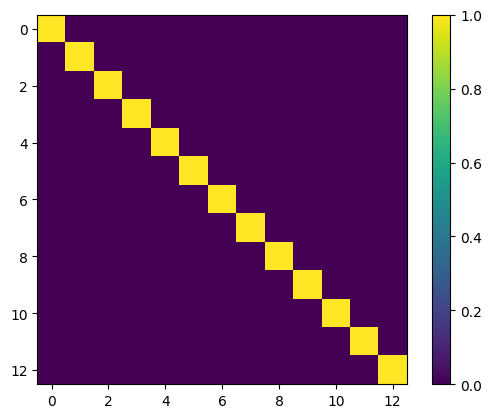

s, t = 3, 8
rnd_tokens = torch.tensor([[[ 2, 0, 1, 0, 2, -3, 0, 8],
[-2, 4, 0, 5, 2, 3, 6, 8],
[ 2, 4, 0, 0, -2, 0, 0, 8]],
[[ 8, 8, 1, 0, 2, -3, 0, 8],
[ 8, 8, 0, 7, 2, 3, 1, 8],
[ 8, 8, 8, 8, 8, 8, 8, 8]]])
rnd_params = torch.rand((2, 1, t))*2-1Rotational preset embedder
Class for a rotational preset embedder.
MultimodialEmbedder
MultimodialEmbedder
MultimodialEmbedder (zero_sum_space:bool)
A basic nn.Module with IO functionality.
MultimodialPresetEmbedder
MultimodialPresetEmbedderConfig
MultimodialPresetEmbedderConfig (clr_dim:int, num_clrs:int, params_dim:int, num_params_per_clr:int, zero_sum_space:bool, explicit_node_type_embeddings:bool, channel_last:bool, parametrized_tokens:O ptional[list[int]]=None, unique_class_va lues:Optional[list[int]]=None)
MultimodialPresetEmbedder
MultimodialPresetEmbedder (clr_dim:int, num_clrs:int, params_dim:int, num_params_per_clr:int, zero_sum_space:bool, explicit_node_type_embeddings:bool=True, channel_last:bool=True, parametrized_tokens:Optional[list[int]]=None, unique_class_values:Optional[list[int]]=None)
Embedder class for multimodial discrete and continuous data, e.g. parametrized gates/actions. Embeddings are fixed and not trained.
RotationalMultimodialPresetEmbedder
RotationalMultimodialPresetEmbedder
RotationalMultimodialPresetEmbedder (clr_dim:int, num_clrs:int, params_dim:int, num_params_per_clr:int, zero_sum_space:bool, explicit_node_t ype_embeddings:bool=True, channel_last:bool=True, parametrized _tokens:Optional[list[int]]=None, un ique_class_values:Optional[list[int] ]=None)
Embedder class for multimodial discrete and continuous data, e.g. parametrized gates/actions. Embeddings are fixed and not trained.
RotationalMultimodialPresetEmbedderTiny
Has the same logic as RotationalMultimodialPresetEmbedder, but uses the same parameter vector-subspace for all tokens. This makes the parameter embeddings the same for all tokens while reducing the dimesionality of the embeddings, i.e. it is independent of the number of tokens.
RotationalMultimodialPresetEmbedderTiny
RotationalMultimodialPresetEmbedderTiny (clr_dim:int, num_clrs:int, params_dim:int, num_params_per_clr:int, zero_sum_space:bool, explicit_no de_type_embeddings:bool=True, channel_last:bool=True, parametr ized_tokens:Optional[list[int]]= None, unique_class_values:Option al[list[int]]=None)
Mostly the same as RotationalMultimodialPresetEmbedder, but the param embedding is not depending on the tokens.
Test
Encode decode check: fixed tensor
unique_class_values = None
unique_class_values = rnd_tokens.unique(sorted=True)
num_clrs = 9
num_params_per_clr = 1
parametrized_tokens = [5, 6, 7]
clr_dim = 1
params_dim = 1
embedder = RotationalMultimodialPresetEmbedderTiny(clr_dim=clr_dim,
num_clrs=num_clrs,
params_dim=params_dim,
num_params_per_clr=num_params_per_clr,
zero_sum_space=True,
explicit_node_type_embeddings=True,
channel_last=True,
parametrized_tokens=parametrized_tokens,
unique_class_values=unique_class_values.tolist())[INFO]: provided `unique_class_values` ([-3, -2, 0, 1, 2, 3, 4, 5, 6, 7, 8]), enforcing `num_clrs=len(unique_class_values)=11`.
[WARNING]: We need at least a `params_dim` (is 1) of `2*num_params_per_clr` (is 2), automatically setting `params_dim` to 2 to inforce this!
[WARNING]: `params_dim` is set to the minimum `2*num_params_per_clr`=2, but for `zero_sum_space=True` we need one more dimension, automatically setting it to `2*num_params_per_clr+1` 3.
[WARNING]: `clr_dim` is set to 1 and `explicit_node_type_embeddings=False`, but for `zero_sum_space=True` we need one more dimension than the number of tokens `num_clrs` (is 11), automatically setting it to `clr_dim=num_clrs+1` 12.
[INFO]: Created `nn.Embedding` with a total of 13 vectors in a 15 dimensional space.rnd_tokens, rnd_params(tensor([[[ 2, 0, 1, 0, 2, -3, 0, 8],
[-2, 4, 0, 5, 2, 3, 6, 8],
[ 2, 4, 0, 0, -2, 0, 0, 8]],
[[ 8, 8, 1, 0, 2, -3, 0, 8],
[ 8, 8, 0, 7, 2, 3, 1, 8],
[ 8, 8, 8, 8, 8, 8, 8, 8]]]),
tensor([[[-0.0690, 0.7864, 0.9059, 0.3405, 0.9263, -0.5743, 0.6541, 0.8584]],
[[-0.3695, -0.8219, 0.2678, -0.3850, -0.5806, -0.2786, 0.0526, 0.5283]]]))rnd_tokens_cls = embedder.tokens_to_unique_class_values(rnd_tokens)
rnd_tokens_clstensor([[[ 4, 2, 3, 2, 4, 0, 2, 10],
[ 1, 6, 2, 7, 4, 5, 8, 10],
[ 4, 6, 2, 2, 1, 2, 2, 10]],
[[10, 10, 3, 2, 4, 0, 2, 10],
[10, 10, 2, 9, 4, 5, 3, 10],
[10, 10, 10, 10, 10, 10, 10, 10]]])enc_tensor = embedder.embed(rnd_tokens_cls, rnd_params)
print(enc_tensor.shape)
recon_tensor, recon_params = embedder.invert(enc_tensor, reduce_spatial=1)
recon_tensor, recon_paramstorch.Size([2, 3, 8, 15])(tensor([[[ 2, 0, 1, 0, 2, -3, 0, 8],
[-2, 4, 0, 5, 2, 3, 6, 8],
[ 2, 4, 0, 0, -2, 0, 0, 8]],
[[ 8, 8, 1, 0, 2, -3, 0, 8],
[ 8, 8, 0, 7, 2, 3, 1, 8],
[ 8, 8, 8, 8, 8, 8, 8, 8]]]),
tensor([[[ 0.0000, 0.0000, 0.0000, 0.3405, 0.0000, 0.0000, 0.6541, 0.0000]],
[[ 0.0000, 0.0000, 0.0000, -0.3850, 0.0000, 0.0000, 0.0000, 0.0000]]]))assert torch.allclose(recon_tensor, rnd_tokens)
assert not torch.allclose(recon_params, rnd_params, atol=1e-06) # note decoding puts 0s on all non param times, but we had rnd ones
pmask = embedder.get_parametrized_mask(embedder.tokens_to_unique_class_values(recon_tensor))
assert torch.allclose(torch.where(pmask.any(1, keepdim=True), recon_params, 0.0), torch.where(pmask.any(1, keepdim=True), rnd_params, 0.0), atol=1e-06)Encode decode check: random circuits
from genQC.platform.simulation import Simulator, CircuitBackendType
from genQC.platform.tokenizer.circuits_tokenizer import CircuitTokenizer, Vocabulary
from genQC.platform.circuits_generation import get_rnd_encoded_circuits, CircuitConditionType
from genQC.dataset.balancing import get_tensor_gate_lengthg = ['h', 'cx', 'ccx', 'swap', 'rx', 'ry', 'cp']
simulator = Simulator(CircuitBackendType.QISKIT)
tokenizer = CircuitTokenizer({gi:i+1 for i,gi in enumerate(g)})
tokenizer.vocabulary{'h': 1, 'cx': 2, 'ccx': 3, 'swap': 4, 'rx': 5, 'ry': 6, 'cp': 7}parametrized_tokens = CircuitTokenizer.get_parametrized_tokens(tokenizer.vocabulary)
parametrized_tokens[5, 6, 7]def get_rnd_qc():
tensors, ys, Us, params = get_rnd_encoded_circuits(backend=simulator.backend,
tokenizer=tokenizer,
condition=CircuitConditionType.UNITARY,
samples=b,
num_of_qubits=s,
min_gates=2,
max_gates=t,
min_sub_gate_pool_cnt=len(tokenizer.vocabulary),
optimized=False)
l = get_tensor_gate_length(tensors, padding_token=0)
for i, li in enumerate(l):
tensors[i, :, li:] = 8
return tensors, ys, Us, paramsb = 512
s, t = 4, 24
tensors, ys, Us, params = get_rnd_qc()
tensors[0][INFO]: Generated unique circuits: 511.
[INFO]: No max_num_params provided, infered p_max_para=1, p_min_value=tensor(-0.9999) and p_max_value=tensor(0.9992).tensor([[-3, -3, 0, 0, 4, 0, -2, 2, 0, 0, 0, 0, 0, 3, 0, 0, 0, 0, -3, 0, 4, 7, -3, 4],
[-3, 3, 0, 0, 4, 0, 0, -2, 1, 7, 3, 0, 6, 0, 6, 0, -2, 7, -3, 0, 0, 7, 3, 0],
[ 0, -3, 7, 5, 0, 1, 2, 0, 0, 0, -3, 4, 0, -3, 0, 1, 0, 7, 3, 0, 4, 0, -3, 0],
[ 3, 0, 7, 0, 0, 0, 0, 0, 0, 7, -3, 4, 0, -3, 0, 0, 2, 0, 0, 5, 0, 0, 0, 4]], dtype=torch.int32)unique_class_values = None
unique_class_values = tensors.unique(sorted=True)
num_clrs = len(tokenizer.vocabulary) + 1 + 1
num_params_per_clr = 3 if "u" in g else 1
clr_dim =1
params_dim = 1
embedder = RotationalMultimodialPresetEmbedderTiny(clr_dim=clr_dim,
num_clrs=num_clrs,
params_dim=params_dim,
num_params_per_clr=num_params_per_clr,
zero_sum_space=True,
explicit_node_type_embeddings=True,
channel_last=True,
parametrized_tokens=parametrized_tokens,
unique_class_values=unique_class_values.tolist())[INFO]: provided `unique_class_values` ([-3, -2, 0, 1, 2, 3, 4, 5, 6, 7, 8]), enforcing `num_clrs=len(unique_class_values)=11`.
[WARNING]: We need at least a `params_dim` (is 1) of `2*num_params_per_clr` (is 2), automatically setting `params_dim` to 2 to inforce this!
[WARNING]: `params_dim` is set to the minimum `2*num_params_per_clr`=2, but for `zero_sum_space=True` we need one more dimension, automatically setting it to `2*num_params_per_clr+1` 3.
[WARNING]: `clr_dim` is set to 1 and `explicit_node_type_embeddings=False`, but for `zero_sum_space=True` we need one more dimension than the number of tokens `num_clrs` (is 11), automatically setting it to `clr_dim=num_clrs+1` 12.
[INFO]: Created `nn.Embedding` with a total of 13 vectors in a 15 dimensional space.tensors = embedder.tokens_to_unique_class_values(tensors)
tensors[0]tensor([[0, 0, 2, 2, 6, 2, 1, 4, 2, 2, 2, 2, 2, 5, 2, 2, 2, 2, 0, 2, 6, 9, 0, 6],
[0, 5, 2, 2, 6, 2, 2, 1, 3, 9, 5, 2, 8, 2, 8, 2, 1, 9, 0, 2, 2, 9, 5, 2],
[2, 0, 9, 7, 2, 3, 4, 2, 2, 2, 0, 6, 2, 0, 2, 3, 2, 9, 5, 2, 6, 2, 0, 2],
[5, 2, 9, 2, 2, 2, 2, 2, 2, 9, 0, 6, 2, 0, 2, 2, 4, 2, 2, 7, 2, 2, 2, 6]])np.sqrt(embedder.clr_dim)np.float64(3.4641016151377544)#embedder single token clr mean:
for i in range(embedder._num_discrete_embeddings):
a = embedder.emb_clr(torch.tensor([i]))[:, :embedder.clr_dim]
print(f"token {str(i):>2}: mean {a.mean():0.3} norm {torch.linalg.vector_norm(a):0.3} std {a.std(correction=0):0.3}")
for i in range(embedder._num_param_embeddings):
a = embedder.emb_clr(torch.tensor([embedder._num_discrete_embeddings+i]))[:, embedder.clr_dim:]
print(f"params {str(i):>2}: mean {a.mean():0.3} norm {torch.linalg.vector_norm(a):0.3} std {a.std(correction=0):0.3}")token 0: mean -1.49e-08 norm 3.46 std 1.0
token 1: mean 4.97e-09 norm 3.46 std 1.0
token 2: mean -1.49e-08 norm 3.46 std 1.0
token 3: mean -2.48e-08 norm 3.46 std 1.0
token 4: mean 0.0 norm 3.46 std 1.0
token 5: mean 1.49e-08 norm 3.46 std 1.0
token 6: mean -1.24e-09 norm 3.46 std 1.0
token 7: mean 1.99e-08 norm 3.46 std 1.0
token 8: mean 1.99e-08 norm 3.46 std 1.0
token 9: mean -2.48e-09 norm 3.46 std 1.0
token 10: mean 9.93e-09 norm 3.46 std 1.0
params 0: mean -1.99e-08 norm 1.73 std 1.0
params 1: mean -3.97e-08 norm 1.73 std 1.0#get scalar produkt of all
p = torch.zeros((embedder.num_embeddings, embedder.num_embeddings))
for i,j in itertools.product(range(embedder.num_embeddings), range(embedder.num_embeddings)):
v1 = embedder.emb_clr(torch.tensor([i]))
v2 = embedder.emb_clr(torch.tensor([j]))
p[i, j] = (v1 * v2).sum() / (torch.linalg.norm(v1)*torch.linalg.norm(v2))
plt.imshow(p)
plt.colorbar()
plt.show()
#before normalization global scale
enc_tensor = embedder.embed(tensors, params)
enc_tensor.mean(), enc_tensor.std(correction=0)(tensor(-7.4943e-09), tensor(1.))enc_tensor[..., :embedder.clr_dim].std(-1, correction=0).unique()tensor([1.])enc_tensor[..., embedder.clr_dim:].std(-1, correction=0).unique()tensor([1.0000, 1.0000, 1.0000, 1.0000])enc_tensor[..., :embedder.clr_dim].var(correction=0)tensor(1.)recon_tensor, recon_params = embedder.invert(enc_tensor)
print(f"{tensors.shape=}")
print(f"{params.shape=}")
print((params-recon_params).abs().max())
assert torch.allclose(embedder.unique_class_values_to_tokens(tensors).long(), recon_tensor)
assert torch.allclose(params, recon_params, atol=1e-07)tensors.shape=torch.Size([511, 4, 24])
params.shape=torch.Size([511, 1, 24])
tensor(5.9605e-08)